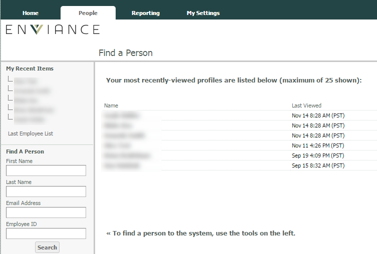

As an administrator you can view user data for an individual user in the system and edit user accounts as needed.
The People tab from the Administration Home page allows you to search for and access user accounts.
For convenience, at the top of the page is:
A list of your 25 most recently viewed users
The date and time that you last viewed their profile
Click on the user's name to access the user profile.

The Find a Person search function in the left menu pane is a shortcut to the People page.
To find a user account:
Under Find a Person enter the first/last name, email address or employee ID and click Search.
The user must match all of the search criteria entered. If you have a lot of users, employee ID is the most reliable search criteria, as many users have similar names.